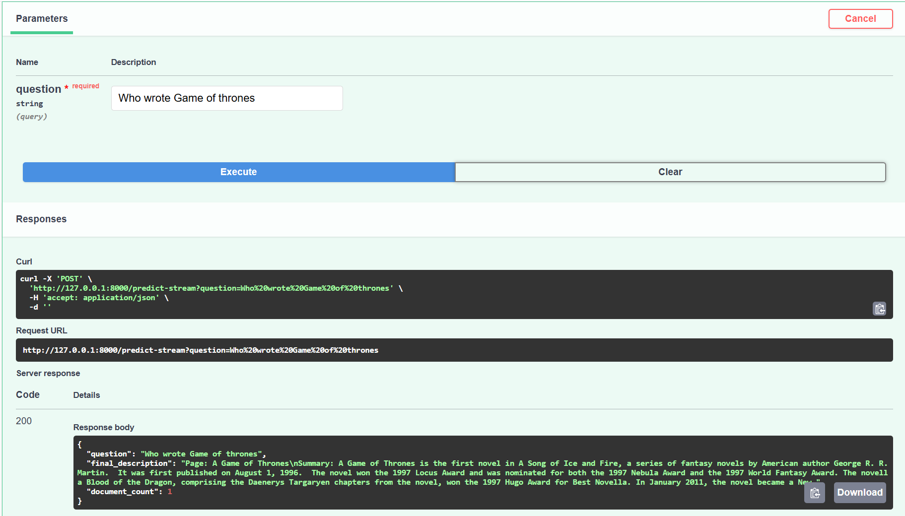

Overview
I built a production-ready LangGraph app that allows users to upload URLs, extract and embed their content, and dynamically answer questions using either a vector database or Wikipedia. The system intelligently routes queries using an LLM and serves the entire workflow via a FastAPI backend, fully containerized for deployment.
My Role & Contributions
- Designed and developed the entire backend architecture using Python.
- Implemented a modular LangGraph workflow with class-based components.
- Integrated Groq’s Gemma2 LLM for fast and cost-efficient inference.
- Connected the app to Astra Vector DB for document retrieval.
- Built RESTful APIs using FastAPI and managed app lifecycle with app.state.
- Containerized the solution using Docker and created environment management with uv.
Tech Stack
Python
FastAPI
LangGraph
LangChain
Groq
Astra DB:
UV
WikiPedia API
Docker
Implementation Details
- Built a deployable, end-to-end RAG application without relying on LangGraph Cloud.
- Achieved faster inference and lower latency using Groq’s Gemma2 model.
- Enabled scalable document ingestion and intelligent query handling.
- Improved code maintainability and testability by using class-based design and folder structure.
- Made the project cloud-ready with Docker and environment isolation via .env and .dockerignore.
